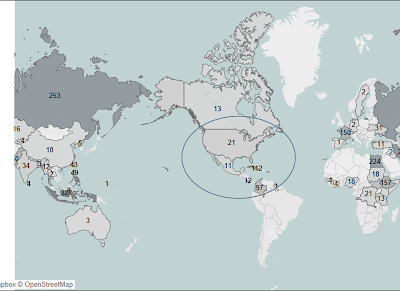

Never since the Wright brothers' first flight in 1903 has travel by air .png) been as popular as it is today. Yet only a short five years later, brother Oliver Wright was responsible for the first air passenger death. Recent highly publicized events have led to questions regarding the safety of flying. Is there any data backing the claim that flying is not as safe as it once was? Should Americans curb their enthusiasm for flying? Is there any reason to give up the convenience and efficiency of airplanes?
been as popular as it is today. Yet only a short five years later, brother Oliver Wright was responsible for the first air passenger death. Recent highly publicized events have led to questions regarding the safety of flying. Is there any data backing the claim that flying is not as safe as it once was? Should Americans curb their enthusiasm for flying? Is there any reason to give up the convenience and efficiency of airplanes?
Over the many years of air travel, along with the increased miles flown has been a steady improvement of safety. Numbers of accidents and fatalities have decreased over the years. A trend of lower fatality rates is obvious over the last thirty years. The last five years have seen some of the lowest rates. Although 2018 has had some high-profile incidents, which has raised questions regarding the safety of flying, numbers still remain very low. When you take into account the increase of miles being flown overall the numbers are even better. For the last ten years the fatality rate per 100 miles is under 0.01. The rate is less than one death every 10,000 miles. These numbers are at all-time record lows.

Since its founding in 2000, JetBlue has yet to have a single incident resulting in the death of a passenger. The safety of our passengers remains our top priority. JetBlue will continue to provide safe and convenient air transportation throughout the United Staes and neighboring countries. These routes have proven to be some of the safest areas for air travel. Over the last few years only two of the countries that JetBlue services have seen more than 25 fatalities. The entire United States over that time period has only experienced 21 deaths.
|  |
Fatalities per country 2015-2021. The blue circle indicates area serviced by JetBlue as well as
London. |
It is safe to say that air travel continues to be a safe and reliable way to travel. If you are looking to travel domestically, no other method can beat flying for its convenience, efficiency and safety. We at JetBlue take pride in our outstanding record for safe flying. It is our belief that the safety of air travel will follow its trend of improvement and will remain a safe and convenient option.